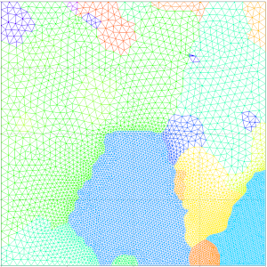
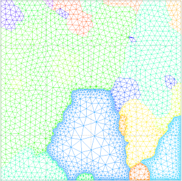

Contents
setMTEXpref('generatingHelpMode',true); % Avoid some artefact (fix issue #5)
mtexdata small [grains, ebsd('indexed').grainId]=calcGrains(ebsd('indexed')); ebsd(grains(grains.grainSize<3))=[]; % Remove small grains grains=calcGrains(ebsd('indexed')); G=gmshGeo(grains);
ebsd = EBSD
Phase Orientations Mineral Color Symmetry Crystal reference frame
0 1197 (32%) notIndexed
1 1952 (52%) Forsterite LightSkyBlue mmm
2 290 (7.8%) Enstatite DarkSeaGreen mmm
3 282 (7.6%) Diopside Goldenrod 12/m1 X||a*, Y||b, Z||c
Properties: bands, bc, bs, error, mad, x, y
Scan unit : um
Set different element size depending on grains
Element size can be defined grain-wise. To do so, one should call the LocalSize class. This class is intended to define particular size of element whithin certain grains. First, pass the list of grains with particular element size to the constructor, e.g.:
LS=LocalSize([5 7], 30)
LS =
GrainID SizeAtBoundaries Slope
_______ ________________ _____
5 30 0
7 30 0
Here, the grains labelled 5 and 7 will be meshed with element of size 30. If a unique value is given to as sizes, it is used for all grains (here 5 and 7); multiple values can also be used, e.g.:
LS=LocalSize([5 7],[20 30])
LS =
GrainID SizeAtBoundaries Slope
_______ ________________ _____
5 20 0
7 30 0
Then, pass the object to the mesh command, as a 'LocalSize' name-value pair argument:
G.mesh('small_with_localSize.msh','ElementSize',100,'LocalSize',LS);

Set different size gradients depending on grains
In addition to the default size, the slope used for meshing with increasing element size with increasing distance from the grain boundaries can be defined element-wise (see here for details). For instance, if one wants the set the slope to 0.5 for grains labelled 5 and 7:
LS=LocalSize([5 7], 20 , 0.5) G.mesh('small_with_localGradient.msh','ElementSize',100,'LocalSize',LS);
LS =
GrainID SizeAtBoundaries Slope
_______ ________________ _____
5 20 0.5
7 20 0.5

Again, the slope can be different for all specified grains, e.g.;
LS=LocalSize([5 7], [20 30], [0.5, 0.7])
LS =
GrainID SizeAtBoundaries Slope
_______ ________________ _____
5 20 0.5
7 30 0.7